전기공사산업기사 (2010-09-05 기출문제)
1과목: 전기응용
1. 전기분해를 이용하여 순수한 금속만을 음극에 석출하여 정제하는 것은?
- 전식
- 전착
- 전해정련
- 전해연마
(정답률: 66%)

2. 목표치가 미리 정해진 시간적 변화를 하는 경우 제어량을 변화시키는 것을 목적으로 하는 제어는?
- 프로그램 제어
- 정치 제어
- 추종 제어
- 비율 제어
(정답률: 64%)
3. 15[kW]이상의 중형 및 대형기의 기동에 사용되는 농형 유도전동기의 기동법은?
- 기동보상기법
- 전전압기동법
- Y-△기동법
- 2차 저항기동법
(정답률: 66%)
4. 니켈-카드뮴(Ni-Cd) 축전지에 대한 설명으로 틀린 것은?
- 1차 전지이다.
- 전해액으로 수산화칼륨이 사용된다.
- 양극에 수산화니켈, 음극에 카드뮴이 사용된다.
- 탄광의 안전등 및 조명등용으로 사용된다.
(정답률: 74%)
5. 전기철도의 신호 보안장치 중에서 폐색장치를 바르게 설명한 것은?
- 정차역 구내에서 원활한 열차 운전을 하기위하여 신호기, 전철기 등을 상호 연관시키는 장치
- 열차가 제한 속도를 초과하면 경보신호 또는 자동으로 열차를 정지시키는 장치
- 선로의 각 구간에 두 열차이상이 진입하지 못하도록 하는 신호장치
- 구간내 각 역에 있는 전철기와 신호기 등을 중앙제어실에서 집중 원격제어하는 장치
(정답률: 73%)
6. 루소선도에서 전광속 F와 면전 S 사이의 관계식으로 옳은 것은? (단, a와 b는 상수이다.)
- F=a/S
- F=aS
- F=aS+b
- F=aS2
(정답률: 68%)
7. 안정 저항 또는 안전 리액턴스를 필요로 하는 가열 방식은?
- 저항 가열
- 유도 가열
- 유전 가열
- 아크 가열
(정답률: 36%)
8. 다음 전기로 중 열효율이 가장 좋은 것은?
- 요동식 아크로
- 카아버런덤로
- 탄소립로
- 저주파 유도로
(정답률: 71%)
9. 최대광도 I[cd]인 평면판 광원으로부터 방출하는 광원의 전광속은?
- πI[lm]
- 2πI[lm]
- 4πI[lm]
- π2I[lm]
(정답률: 54%)
10. 단상 정류로 직류전압 200[V]를 얻으려면 반파 정류의 경우에 변압기의 2차권선 상전압 Vs를 약 몇 [V]로 하여야 하는가?
- 115[V]
- 141[V]
- 362[V]
- 444[V]
(정답률: 59%)
11. 보일러 수위제어 및 반응온도 제어에 적합한 것은?
- on-off제어
- 비례 동작제어
- 적분 동작제어
- 미분 동작제어
(정답률: 65%)
12. 광석에 함유되어있는 금속을 산 등으로 용해시킨 전해액으로 사용하여 캐소드에 순수한 금속을 전착시키는 방법은?
- 전해 정제
- 전해 채취
- 식염 전해
- 용융점 전해
(정답률: 50%)
13. 저항 발열체로서의 구비 조건 중 틀린 것은?
- 내열성이 클 것
- 저항의 온도계수가 양(+)수로서 작을 것
- 연전성이 풍부하고 가공이 용이할 것
- 내식성이 작을 것
(정답률: 66%)
14. 100[cd]의 점광원의 하방 1[m]되는 곳에 있는 반사율 80[%]인 백색판의 광속발산도는?
- 80[rlx]
- 70[rlx]
- 8[rlx]
- 7[rlx]
(정답률: 73%)
15. 부하 전류가 증가하면 가장 급격히 속도가 감소하는 전동기는?
- 직류 분권전동기
- 직류 복권전동기
- 3상 유도전동기
- 직류 직권전동기
(정답률: 78%)
16. 흑연화 전기로의 가열방식은?
- 아크 가열
- 유도 가열
- 저항 가열
- 유전 가열
(정답률: 40%)
17. 전기회로의 전류는 열회로의 무엇과 대응 되는가?
- 열류
- 열량
- 열용량
- 열저항
(정답률: 83%)
18. 1.5[kW]의 전동기를 정격상태에서 30분간 사용했을 때 발생 열량은?
- 2700[kcal]
- 2160[kcal]
- 648[kcal]
- 430[kcal]
(정답률: 66%)
19. 다음 중 열차 저항의 종류와 관계가 없는 것은?
- 복선저항
- 출발저항
- 곡선저항
- 구배저항
(정답률: 58%)
20. 다음 중 가장 밝게 느껴지는 빛의 파장은?
- 255[nm]
- 355[nm]
- 455[nm]
- 555[nm]
(정답률: 83%)
2과목: 전력공학
21. 경간 200m인 가공 전선로에서 사용되는 전선의 길이는 경간보다 몇 [m] 더 길게 하면 되는가? (단, 사용 전선의 1m당 무게는 2kg, 전선의 허용 인장 하중은 4000kg, 전선의 안전율은 2 이고, 풍압하중 등은 무시한다.)
- 1/2[m]
- √2[m]
- 1/3[m]
- 2/3[m]
(정답률: 27%)
22. 재점호가 가장 일어나기 쉬운 차단전류는?
- 동상전류
- 지상전류
- 진상전류
- 단락전류
(정답률: 36%)
23. 유효낙차 50m, 최대사용수량 40m3/s, 수차 및 반전기의 합성효율이 80%인 발전소의 최대 출력은 약 몇 [kW]인가?
- 14700[kW]
- 15700[kW]
- 24700[kW]
- 25700[kW]
(정답률: 28%)
24. 유효낙차 500m인 펠턴수차의 노즐에서 분사되는 유수의 속도는 약 몇 [m/s]인가?
- 60[m/s]
- 71[m/s]
- 90[m/s]
- 99[m/s]
(정답률: 36%)
25. 송전계통에서 콘덴서와 리액터를 직렬로 연결하여 제거시키는 고조파는?
- 제3고조파
- 제5고조파
- 제7고조파
- 제9고조파
(정답률: 52%)
26. 1상의 대지정전용량이 0.53㎌ 주파수 60Hz인 3상 송전선이 있다. 이 선로에 소호리액터를 설치할 때 소호리액터의 10% 과보상탭의 리액턴스는? (단, 소호리액터를 접지시키는 변압기 1상당의 리액턴스는 9Ω이다)(오류 신고가 접수된 문제입니다. 반드시 정답과 해설을 확인하시기 바랍니다.)
- 약 1514[Ω]
- 약 1665[Ω]
- 약 1768[Ω]
- 약 1851[Ω]
(정답률: 21%)
27. 고압 배전선로의 보호방식에서 고장 전류의 차단방식이 아닌 것은?(오류 신고가 접수된 문제입니다. 반드시 정답과 해설을 확인하시기 바랍니다.)
- 퓨즈에 의한 보호방식
- 리클로저(recloser)에 의한 방식
- 섹셔널라이저(sectionalizer)에 의한 방식
- 자동부하 전환스위치(ALTS : Auto Load Transfer Switch)에 의한 방식
(정답률: 36%)
28. 정격 전압 1차 6600V, 2차 210V의 단상 변압기 두 대를 승압기로 V 결선하여 6300V의 3상 전원에 접속한다면 승압된 전압은 약 몇 [V]인가?
- 6900[V]
- 6650[V]
- 6500[V]
- 6350[V]
(정답률: 30%)
29. 변전소에 설치되는 가스차단기의 설명으로 틀린 것은?
- 공기차단기에 비하여 개폐시에 소음이 크다.
- 불연성이므로 화재의 위험성이 적다.
- 자력소호가 가능하다.
- 특고압계통의 차단기로 많이 사용된다.
(정답률: 40%)
30. 과전계류계전기 (OCR)의 탭(tap) 값은?
- 계전기의 최소 동작전류
- 계전기의 최대 부하전류
- 계전기의 동작시한
- 변류기의 권수비
(정답률: 42%)
31. 이상전압 발생의 우려가 가장 작은 중성점 접지방식은?
- 직접 접지방식
- 저항 접지방식
- 소호리액터 접지방식
- 비접지방식
(정답률: 34%)
32. 역률 80% 10000kVA의 부하를 갖는 변전소에 2000KVA의 콘덴서를 설치해서 역률을 개선하면 변압기에 걸리는 부하는 얼마 정도인가?
- 8000[kW]
- 8540[kW]
- 8940[kW]
- 9440[kW]
(정답률: 27%)
33. 3상 송전 선로의 선간 전압을 100kV, 3상 기준 용량을 10000kVA로 할 때, 선로 리액턴스(1선당) 100Ω을 % 임피던스로 환산하면?
- 0.33[%]
- 1[%]
- 3.33[%]
- 10[%]
(정답률: 23%)
34. 전력 원선도에서 알 수 없는 것은?
- 송 · 수전 효율
- 손실
- 역률
- 코로나 손실
(정답률: 29%)
35. 복도체를 사용하면 송전용량이 증가하는 주된 이유로 옳은 것은?
- 코로나가 발생하지 않는다.
- 선로의 작용인덕턴스가 감소한다.
- 전압강하가 적어진다.
- 무효전력이 적어진다.
(정답률: 33%)
36. 원자로의 감속재로 사용되는 것이 아닌 것은?
- 경수
- 중수
- 흑연
- 카드뮴
(정답률: 34%)
37. 어떤 건물의 부하 밀도가 전등 50VA/m2, 일반 동력 55VA/m2, 냉방 부하 45VA/m2이며, 면적이 3300m2일 때 부하 설비 용량은?
- 155[kVA]
- 330[kVA]
- 480[kVA]
- 495[kVA]
(정답률: 26%)
38. 66kV 송전계통에서 3상 단락고장이 발생하였을 경우 고장점에서 본 등가 정상임피던스가 100MVA기준으로 25%라고 하면 단락용량은?
- 250[MVA]
- 300[MVA]
- 400[MVA]
- 500[MVA]
(정답률: 33%)
39. 주상변압기에 시설하는 캐치홀더는 어느 부분에 직렬로 삽입하는가?
- 1차측 양선
- 1차측 1선
- 2차측 비접지측 선
- 2차측 접지된 선
(정답률: 25%)
40. 3상3선식 송전선로 1선 1㎞의 임피던스를 z, 어드미턴스를 y 라 하면 특성임피던스는?
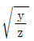
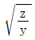
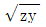
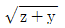
(정답률: 42%)
3과목: 전기기기
41. 단자전압 100[V], 전기자 전류 10[A], 전기자 회로의 저항 1[Ω], 정격속도 1800[rpm]으로 전부하에서 운전하고 있는 직류 분권 전동기이 토크는?
- 약 2.8[N · m]
- 약 3.0[N · m]
- 약 4.0[N · m]
- 약 4.8[N · m]
(정답률: 34%)
42. 직류 발전기를 병렬 운전할 때 균압선을 설치하여 병렬 운전하는 발전기는?
- 분권 발전기
- 타여자기
- 복권 발전기
- 단극 발전기
(정답률: 28%)
43. 무부하 전동기는 역률이 낮지만 부하가 증가하면 역률이 커지는 이유는?
- 전류 증가
- 효율 증가
- 전압 감소
- 2차 저항 증가
(정답률: 30%)
44. 유도전동기의 원선도에 대한 설명으로 옳은 것은?
- 원선도의 지름은 전압에 비례하고 리액턴스에 반비례한다.
- 원선도를 작성하기 위해서는 슬립을 측정하여야한다.
- 원선도를 작성하기 위해서는 부하시험을 하여야한다.
- 원선도상에서 직접 기계적 출력을 얻을 수 있다.
(정답률: 28%)
45. 동기 발전기의 자기 여자 현상을 방지하는 방법이 아닌 것은?
- 발전기 여러 대를 모선에 병렬로 접속한다.
- 수전단에 동기조상기를 접속한다.
- 수전단에 리액턴스를 병렬로 접속한다.
- 단락비가 작은 발전기를 사용한다.
(정답률: 25%)
46. 동기 전동기의 위상 특성 곡선(V-곡선)에 대하여 옳게 설명한 것은?
- 계자 전류가 역률 1일 때 보다 크면 앞선 전기자 전류가 흐른다.
- 계자 전류가 역률 1일 때 보다 크면 뒤진 전기자 전류가 흐른다.
- 계자 전류가 역률 1일 때 보다 작으면 앞선 전기자 전류가 흐른다.
- 계자 전류가 역률 1일 때 보다 작으면 동상의 전기자 전류가 흐른다.
(정답률: 35%)
47. 변압기의 부하 전류 및 전압이 일정하고 주파수가 낮아지면?
- 철손이 증가
- 철손이 감소
- 동손이 증가
- 동손이 감소
(정답률: 26%)
48. 직류 분권전동기의 전압이 일정할 때 부하 토크가 2배이면 부하전류는 약 몇 배가 되는가?
- 0.5
- 2.0
- 4.0
- 4.5
(정답률: 35%)
49. 유도전동기의 속도제어 방식으로 적합하지 않은 것은?
- 2차 여자제어
- 2차 저항제어
- 1차 저항제어
- 1차 주파수제어
(정답률: 26%)
50. 60[Hz], 12극의 동기 전동기 회전 자계의 주변 속도는? (단, 회전 자계의 극 간격은 1[m]이다.)(오류 신고가 접수된 문제입니다. 반드시 정답과 해설을 확인하시기 바랍니다.)
- 10[m/s]
- 31.4[m/s]
- 120[m/s]
- 377[m/s]
(정답률: 23%)
51. 교류전동기에서 브러시 이동으로 속도변화가 편리한 전동기는?
- 시라게 전동기
- 농형 전동기
- 동기 전동기
- 2중 농형 전동기
(정답률: 37%)
52. 3300/100[V], 10[kVA]의 단상 변압기의 2차를 단락하고 10[A]를 통하려면 1차에 가해야 할 전압은? (단, r1 = 160[Ω], r2 = 0.16[Ω], x1 = 300[Ω] x2 = 0.30[Ω])
- 약 6.25[V]
- 약 26.5[V]
- 약 215[V]
- 약 625[V]
(정답률: 17%)
53. 3300/210[V], 5[kVA] 단상 변압기가 퍼센트 저항 강하 2.4[%], 리액턴스 강하 1.8[%]이다. 임피던스 전압은?
- 99[V]
- 66[V]
- 33[V]
- 21[V]
(정답률: 15%)
54. 4극 7.5[㎾], 200[V], 60[Hz]인 3상 유도전동기가 있다. 전부하에서의 2차 입력이 7950[W]이다. 이 경우의 2차 효율은? (단, 기계손은 130[W]이다.)
- 약 92[%]
- 약 94[%]
- 약 96[%]
- 약 98[%]
(정답률: 30%)
55. 단상 전파정류회에서 순저항부하시의 맥동율은?
- 17[%]
- 27[%]
- 36[%]
- 48[%]
(정답률: 35%)
56. 직류전동기의 제동법 중 발전제동에 대한 설명으로 옳은 것은?
- 전동기가 정지할 때까지 제동토크가 감소하지 않는 특징을 지닌다.
- 전동기를 발전기로 동작시켜 발생하는 전력을 전원으로 변환함으로써 제동한다.
- 전기자를 전원과 분리한 후 이를 외부저항에 접속하여 전동기의 운동에너지를 열에너지로 소비시켜 제동한다.
- 운전중인 전동기의 전기자접속을 반대로 접속하여 제동한다.
(정답률: 27%)
57. 다음 중 3단자 사이리스터가 아닌 것은?
- SCR
- GTO
- SCS
- TRIAC
(정답률: 38%)
58. 부하에 관계없이 변압기에 흐르는 전류로서 자속만을 만드는 것은?
- 1차전류
- 철손전류
- 여자전류
- 자화전류
(정답률: 37%)
59. 다음 중 GTO의 특징이 아닌 것은?
- 전류회로가 반드시 필요하다.
- 전압-전류 특성은 SCR과 거의 같다.
- +게이트전류로 턴 온 된다.
- -게이트전류로 턴 오프 된다.
(정답률: 33%)
60. 변압기의 온도시험을 하는데 가장 좋은 방법은?
- 실부하법
- 반환부하법
- 단락시험법
- 내전압법
(정답률: 35%)
4과목: 회로이론
61. 저항 R=6[Ω]과 유도리액턴스 XL=8[Ω]이 직렬로 접속된 회로에서 v=200√2 sinωt[V]인 전압을 인가하였다. 이 회로의 소비되는 전력[㎾]은?
- 3.2[㎾]
- 2.4[㎾]
- 2.2[㎾]
- 1.2[㎾]
(정답률: 33%)
62. 다음의 회로에서 입력 임피던스 Z의 실수부가 R/2이 되려면 1/ωC은? (단, 각주파수는 ω[rad/s]이다)
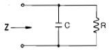
- ω/R
- Rω
- 1/R
- R
(정답률: 21%)
63. 전압 200[V]의 3상 회로에 다음과 같은 평형부하를 접속했을 때 선전류는? (단, r = 9[Ω], 1/ωC=4[Ω]이다)(오류 신고가 접수된 문제입니다. 반드시 정답과 해설을 확인하시기 바랍니다.)
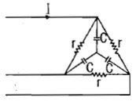
- 약 28.9[A]
- 약 38.5[A]
- 약 48.1[A]
- 약 115.5[A]
(정답률: 14%)
64. 다음과 같은 H형 회로의 4 단자 정수에서 A 값은?
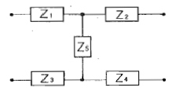
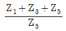
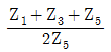
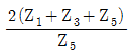
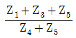
(정답률: 28%)
65. Y 결선된 대칭 3상 회로에서 전원 한상의 전압이 Va=√2 220 sin ωt[V]일 때 선간전압의 실효값은?
- 약 390[V]
- 약 381[V]
- 약 486[V]
- 약 491[V]
(정답률: 46%)
66. 대칭 3상 Y결선 부하에서 각 상의 임피던스가 16+j12Ω이고, 부하전류가 10A일 때, 이 부하의 선간전압은?
- 약 152.6[V]
- 약 229.1[V]
- 약 346.4[V]
- 약 445.1[V]
(정답률: 28%)
67. 저항 R[Ω], 콘덴서 C[F]의 병렬 회로에서 전원 주파수가 변할 때 임피던스 궤적은?
- 제1상한 내의 반직선이 된다.
- 제1상한 내의 반원이 된다.
- 제4상한 내의 반원이 된다.
- 제4상한 내의 반직선이 된다.
(정답률: 24%)
68. R-C 병렬회로에 60Hz, 100V의 전압을 가했을 때, 유효전력 600W, 무효전력 800Var라면 이 회로의 ㉠저항과 ㉡정전용량은?
- ㉠ 12.5[Ω], ㉡ 159[㎌]
- ㉠ 159[Ω], ㉡ 12.5[㎌]
- ㉠ 16.7[Ω], ㉡ 212[㎌]
- ㉠ 212[Ω], ㉡ 16.7[㎌]
(정답률: 35%)
69. 저항이 3Ω, 유도 리액턴스가 4Ω인 직렬 회로에 e=141.4sinωt+42.4sin3ωt[V]의 전압인가시 흐르는 전류의 실효값은?
- 약 14.25[A]
- 약 16.15[A]
- 약 18.25[A]
- 약 20.5[A]
(정답률: 22%)
70. 다음 회로에서 단자 a, b에 나타나는 전압 Vab는?
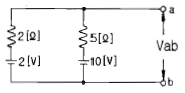
- 약 3.6[V]
- 약 4.3[V]
- 약 5.2[V]
- 약 6.8[V]
(정답률: 24%)
71. R = 100[Ω],
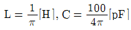
가 직렬로 연결되어 공진할 경우 이 공진회로의 전압확대율 Q는?- 2×103
- 2×104
- 3×103
- 3×104
(정답률: 29%)
72. 비정현주기파를 여러 개의 정현파의 합으로 표시하는 것은?
- 푸리에 분석
- 노튼의 정리
- 테일러의 공식
- 키르히호프의 법칙
(정답률: 31%)
73. 4단자 정수 A, B, C, D 중에서 어드미턴스 차원을 가지는 정수는?
- A
- B
- C
- D
(정답률: 37%)
74.
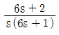
의 역 라플라스 변환은?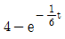
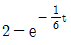
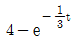
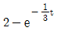
(정답률: 31%)
75.
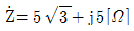
인 3개의 임피던스를 Y 결선하여 선간전압 250[V]의 대칭 3상 전원에 연결하였다. 소비전력[W]은 약 얼마인가?- 3125[W]
- 5413[W]
- 6252[W]
- 7120[W]
(정답률: 24%)
76. 다음과 같은 회로에서 스위치 K가 닫힌 상태에서 회로에 정상전류가 흐르고 있다. t = 0에서 스위치 K를 열 때 회로에 흐르는 전류[A]는?
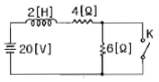
- 2+3e-5t[A]
- 2+3e-2t[A]
- 2+2e-2t[A]
- 2+2e-5t[A]
(정답률: 20%)
77. 다음 회로에서 5[Ω]에 흐르는 전류의 크기는?
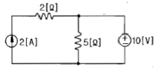
- 1[A]
- 2[A]
- 3[A]
- 4[A]
(정답률: 31%)
78. 시간함수 f(t) = u(t) + 2e-t의 라플라스 변환은?
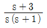
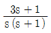
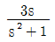
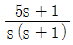
(정답률: 38%)
79. 다음과 같이 접속된 회로에 평형 3상 전압 E[V]를 가할때의 전류 I1은?
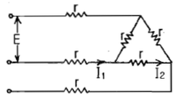
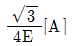
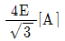
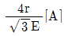
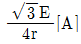
(정답률: 29%)
80. 권수 N = 2000회, 저항 R = 10[Ω]인 어떤 자계코일에 전류 I = 10[A]를 흘렸을 때 자속이 6×10-2이다. 이회로의 시정수는?
- 1.0[s]
- 1.2[s]
- 1.4[s]
- 1.6[s]
(정답률: 30%)
5과목: 전기설비
81. 35kV이하의 특고압 가공전선이 건조물과 제 1차 접근 상태로 시설되는 경우의 이격거리는 몇 [m] 이상이어야 하는가? (단, 건조물과 조영재의 구분 및 전선종류는 무관)
- 3
- 3.5
- 4
- 4.5
(정답률: 26%)
82. 고압 및 특고압 전로 중 피뢰기를 설치하지 않아도 되는 곳은?
- 발·변전소의 가공전선 인입구 및 인출구
- 가공전선로와 지중전선로가 접속하지 않는 곳
- 가공전선로에 접속한 특고압 배전용 변압기의 고압측 및 특고압측
- 특고압 가공 전선로부터 공급을 받는 수용장소의 인입구
(정답률: 39%)
83. 일반주택 및 아파트 각 호실의 현관등과 같은 조명용 백열전등을 설치할 때에는 타임스위치를 시설하여야 한다. 몇 분 이내에 소등되는 것이어야 하는가?
- 1분
- 3분
- 5분
- 7분
(정답률: 47%)
84. 조상기 내부에 고장이 발생할 경우 자동적으로 조상기를 전로로부터 차단하는 장치를 필요로 하는 조상기 용량은 몇 [kVA] 이상인가?
- 15000
- 20000
- 25000
- 30000
(정답률: 34%)
85. 전압의 종별을 구분할 때 직류 몇 [V] 이하의 전압을 저압으로 구분하는가?(2021년 개정된 KEC 규정 적용됨)
- 700
- 1000
- 1500
- 7000
(정답률: 28%)
86. 사용전압이 35kV 이하인 특고압 가공전선을 일반도로에 시설할 때 지표상의 높이는 몇 [m] 이상으로 하여야 하는가?
- 3.5
- 4
- 4.5
- 5
(정답률: 31%)
87. 교류식 전기철도에서 교류 전차선 등과 식물사이의 이격거리는 몇 [m] 이상이어야 하는가?
- 1
- 1.2
- 2
- 2.5
(정답률: 46%)
88. 전선의 단면적이 55mm2인 경동연선을 사용하고 지지물로 철탑을 사용하는 경우 제3 특고압 보안공사에 의하여 시설하는 경간의 한도는 몇 [m] 인가?(오류 신고가 접수된 문제입니다. 반드시 정답과 해설을 확인하시기 바랍니다.)
- 300
- 400
- 500
- 600
(정답률: 28%)
89. 저압전로에서 그 전로에 지락이 생겼을 경우에 0.5초 이내에 자동적으로 전로를 차단하는 자동 차단기 설치시 자동 차단기의 정격감도가 50mA이고 물기가 있는 장소인 경우 접지저항 값은 얼마 이하인가? (단, 제3종 접지공사인 경우이다.)
- 100[Ω]
- 150[Ω]
- 300[Ω]
- 500[Ω]
(정답률: 36%)
90. 애지사용공사에 의한 저압 옥내배선 공사에서 전선상호간의 이격 거리는 몇 [cm] 이상이어야 하는가?
- 2
- 4
- 6
- 8
(정답률: 40%)
91. 가공 전선로의 지지물에는 취급자가 오르고 내리는데 사용하는 발판 볼트 등은 특별한 경우를 제외하고 지표상 몇 [m] 미만에는 시설하지 않아야 하는가?
- 1.0
- 1.5
- 1.8
- 2.0
(정답률: 54%)
92. 어느 유원지의 어린이 놀이 기구에 사용된 유희용 전차의 공급 전압은 교류 몇 [V] 이하인가?
- 20
- 40
- 60
- 100
(정답률: 33%)
93. 특고압 가공전선로에 케이블을 사용하는 경우 조가용선 및 케이블의 피복에 사용하는 금속체에는 제 몇 접지 공사를 하여야하는가?
- 제1종 접지공사
- 제2종 접지공사
- 제3종 접지공사
- 특별 제3종 접지공사
(정답률: 33%)
94. 다음 중 지중전선로의 전선으로 가장 적합한 것은?
- 절연전선
- 동복강선
- 케이블
- 나경동선
(정답률: 43%)
95. 정격전류 20A 인 배선용 차단기로 보호되는 저압 옥내전로에 접속할 수 있는 콘센트는 정격전류 몇 [A] 이하인것을 사용하여야 하는가?
- 15
- 20
- 30
- 50
(정답률: 39%)
96. 고압 가공전선과 안테나가 접근하여 시설할 때 전선과 안테나 사이의 수평 이격거리는 몇 [cm] 이상이어야 하는가? (단, 전선은 고압 절연전선이라고 한다.)
- 70
- 80
- 90
- 120
(정답률: 40%)
97. 가공전선로의 지지물에 시설하는 통신선과 고압 가공전선 사이의 이격 거리는 몇 [cm] 이상 이어야 하는가? (단, 첨가 통신용 제1종 케이블인 경우)
- 15
- 30
- 60
- 75
(정답률: 31%)
98. 다음 중에서 옥주, A종 철주 또는 A종 철근 콘크리트주를 전선로의 지지물로 사용할 수 없는 보안공사는?
- 고압 보안공사
- 제1종 특고압 보안공사
- 제2종 특고압 보안공사
- 제3종 특고압 보안공사
(정답률: 33%)
99. 백열전등 또는 방전등에 전기를 공급하는 옥내 전로의 대지전압은 몇 [V] 이하를 원칙으로 하는가?
- 300V
- 380V
- 440V
- 600V
(정답률: 41%)
100. 특고압 가공전선이 도로 등과 교차하여 도로 상부측에 시설할 경우에 보호망도 같이 시설하려고 한다. 보호망은 제 몇 종 접지공사로 하여야 하는가?
- 제1종 접지공사
- 제2종 접지공사
- 제3종 접지공사
- 특별 제3종 접지공사
(정답률: 35%)